The first isnad
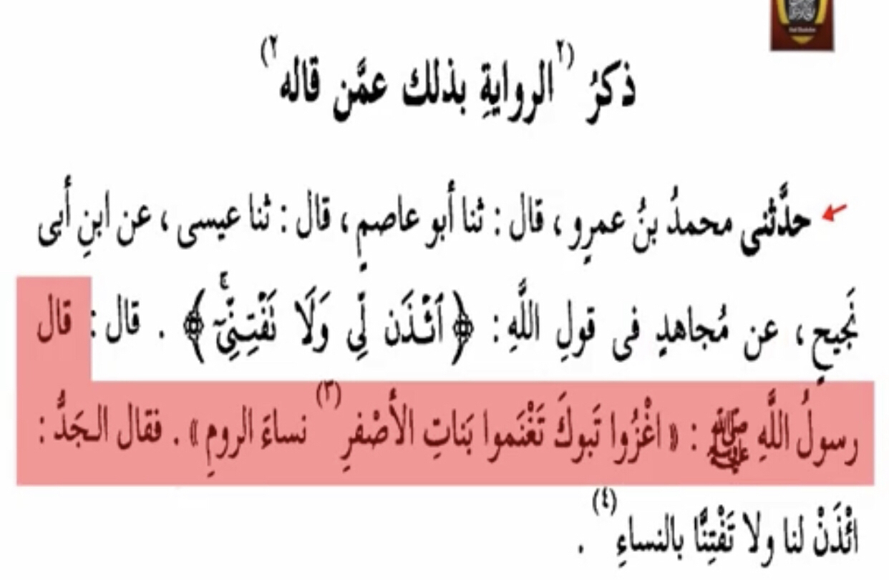
It says mujahid said But did mujahid meet the prophet ?
Translation: “Mujahid bin jabr died 101,102.,103,104 when he was 83 years old”
-Source: Takrib al-tahzib page number 453 ibn hajar (RH) person number 6481 by name mujahid bin jabr
So lets take the most recent year 101
101-83=18 A.H The prophet died 11 A.H as all Muslims know that makes the hadith mursal and weak
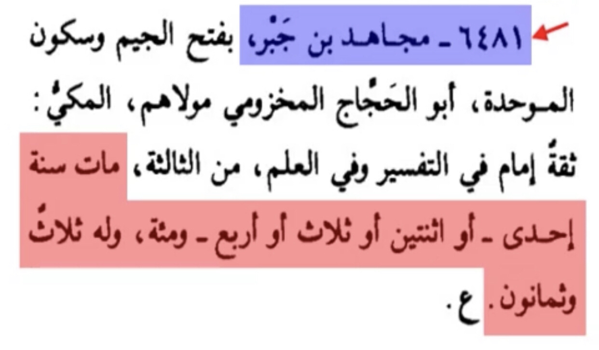
Narration number #2
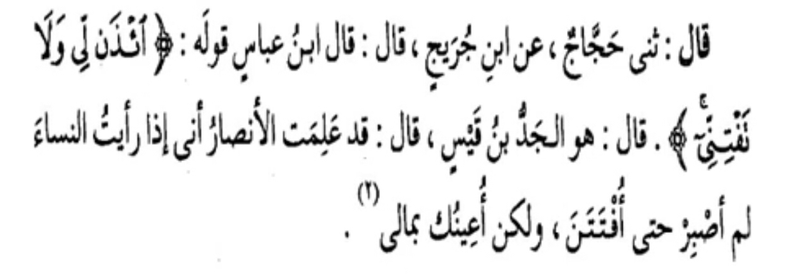
There is also a problem here Ibn jarij if he said kal the hadith automatically is da’if
Translation: “Narrated Ahmed bin Hanbal: if ibn jarij said Kal or Kal fulan came with rejected narrations”
-Source: Syar aalam al-nubalaa volume 6 page number 328
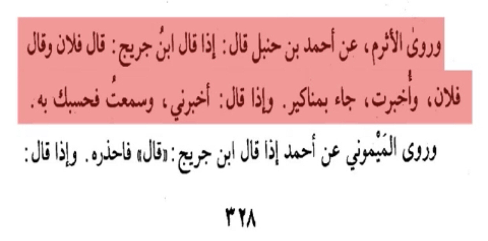
isnad number #3
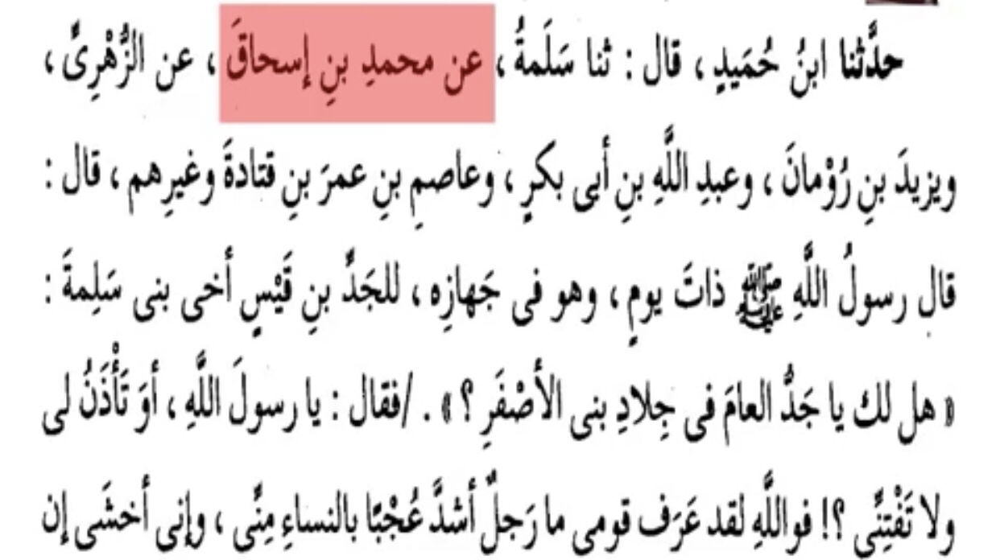
The hadith contains ibn humaid who is he
Translation: “It has been proven to us that ibn hamid is a liar”
-Source: Al-Majroohin Min al-muhadetheen imam bin haban (RH) volume 2 page number 321 person number 1005 by name “muhammed bin humaid Al-Razy” end of the page
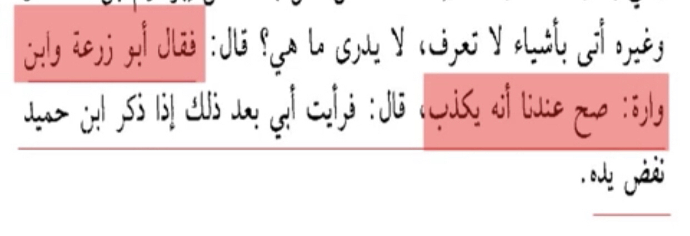
None of the first narrators met the prophet again a mursal hadith
Narration number #4
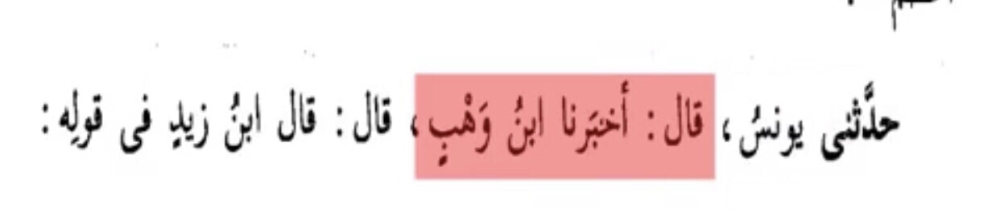
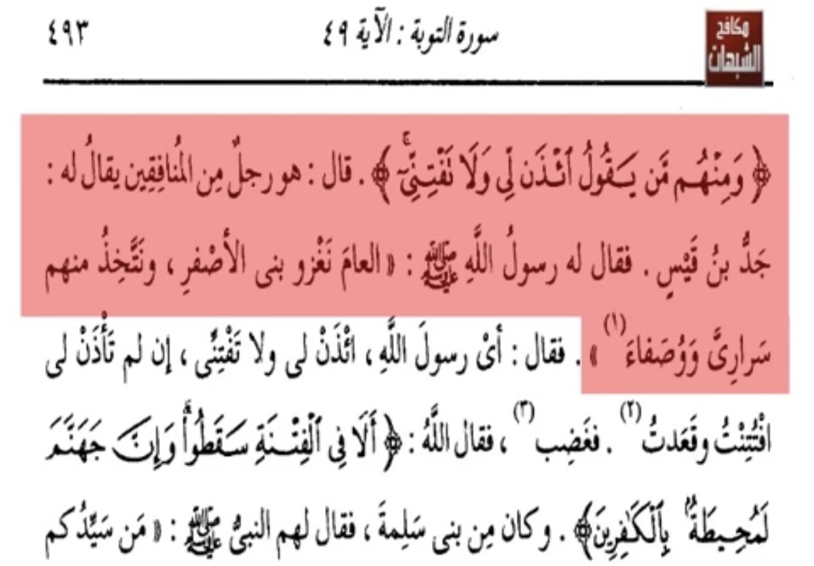
Ibn zayd wasn’t alive at the time of the prophet
And he is weak
Translation: “Abdulrahman bin zayd bin aslam is a weak narrator”
-Source: Takrib al-Tahzib bin hajar al-Asqualani (RH) page number 282 person number 3865
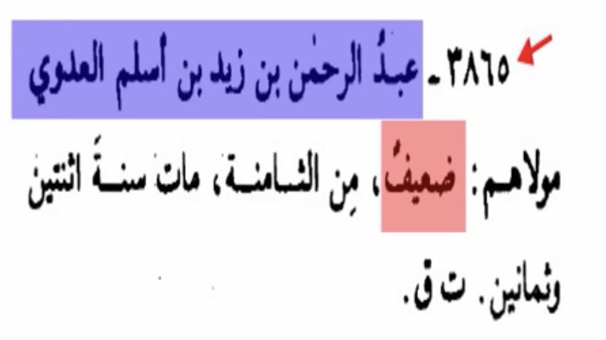
Narration number #5
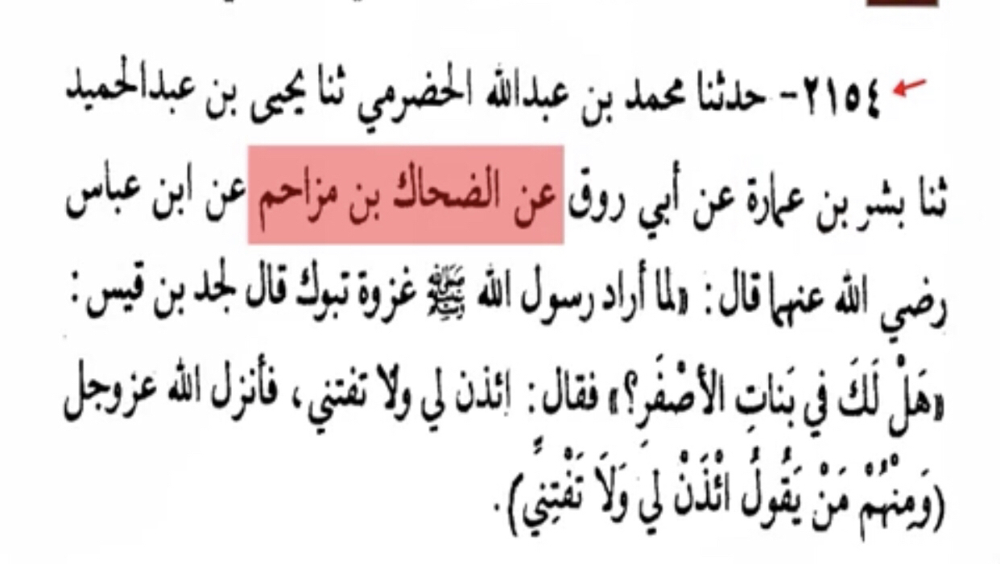
This narration contains “Yehia bin abdulhamid” is he a weak narrator?
Translation: “Yehia bin Abdulhamid is munkar al-hadith Nisa’i said Da’if in hadith (weak narrator) and ahmed said (He lied too much)”
-Source: Al-Mughny fi al-Duafaa Al-Dhahabi (RH) volume 2 page number 407 person number 7006 by name “Yehia bin Abdulhamid”
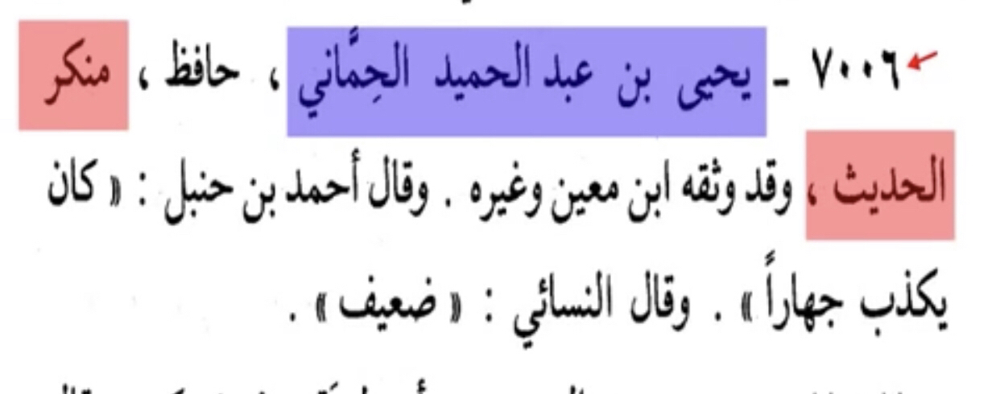
Narration number #6
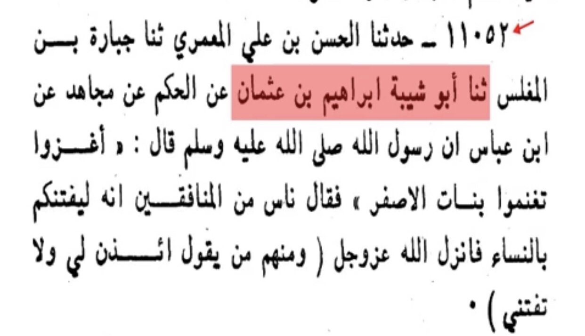
This hadith contains Jabara bin Al-Mughlis is he weak ?
Translation: “Al-Bukhari said: Disorted in hadith Ibn maain said : He is a liar
Ibn namir said he puts hadith from his own without knowing”
-Source: Syar aalam al-Nubalaa volume 11 page number 151 person number 57 by name “Jabara bin Al-Mughalis” by Al-Dhahabi (RH)
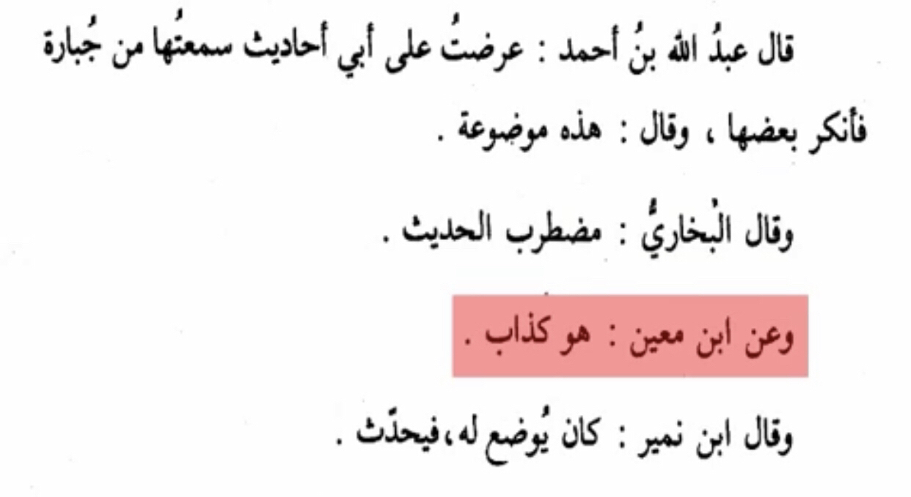